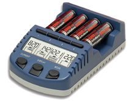

Technoline BC 1000 - интеллектуальное зарядное устройство. Это обзор для тех, кто собрался покупать такое или ему подобное ЗУ. Ориентировочная цена в 2015 году: 3 940 р.

Устройство предназначено для обслуживания NiMh/NiCd аккумуляторов формата АА/ААА с напряжением 1,2В. По сути, это полный аналог хорошо себя зарекомендовавших ЗУ La Crosse BC1000 и La Crosse RS 1000, отличие только в комплектации и в аккумуляторах, входящих в комплект. Данное устройство комплектуется сумочкой для переноски и хранения, 4-мя адаптерами АА-D/AA-C, 4-мя аккумуляторами АА Technoline 2500 мАч.
Основные особенности
1. 4 раздельных канала зарядки, т.е. каждый аккумулятор может обслуживаться в своем собственном режиме;
2. Максимальный ток заряда - 1000 мА. Позволяет, в случае необходимости, быстро зарядить все 4 аккумулятора;
3. 2 термодатчика. Необходимы для защиты аккумуляторов от перегрева и своевременной приостановки процесса заряда, чтобы сохранить химическую структуру электролита. Корректная температура в процессе заряда - гарантия долгой и качественной работы аккумуляторов;
4. Определение емкости аккумуляторов. Режим "Test" - предназначен для тестирования и замера действительной емкости ваших источников питания;
5. Режимы "Charge", "Dishcarge" - позволяют не только зарядить аккумуляторы, но и разрядить их. Периодическая зарядка, с предшествующей ей полной и правильной разрядкой - залог того, что аккумуляторы будут использоваться на все 100%, т.е. будут выдавать максимально возможную для них емкость.
6. Режим "Refresh" - обновит, восстановит и, возможно, подарит "вторую жизнь" вашим, уже, казалось бы, "умершим" аккумуляторам. В этом режиме устройство будет разряжать, заряжать, и измерять емкость. И будет повторять этот процесс до тех пор, пока емкость не перестанит увеличиваться. Эта функция крайне полезна как новым аккумуляторам, требующим "раскачки", так и уже использовавшимся много раз. Снимает эффект памяти и восстанавливает емкость, определит аккумулятор, использование которого уже нецелесообразно.
Следует иметь ввиду, что применение одного неисправного аккумулятора, совместно с исправными, неизбежно приведет к тому, что хорошие аккумуляторы, со временем также выйдут из строя. Поэтому, важно отсечь такие источники питания еще на этапе зарядки.
Поставляются в голубом и черном корпусе (преимущественно в голубом).
Характеристики Technoline BC 1000
• 4 раздельных канала для зарядки аккумуляторов
• Ручной выбор тока зарядки: от 200 до 1000mA для 4-х аккумуляторов, до 1800mA для 2-х аккумуляторов
• Быстрая зарядка: 70 мин для 2000mAh АА аккумуляторов
• Возможность одновременной зарядки АА и ААА аккумуляторов
• Быстрая разрядка с последующим зарядом - удаление эффекта «памяти»
• Ручной выбор тока разрядки: 100/250/350/500mAh
• Возможность автоматического выбора параметров зарядки/разрядки
• Тренировка - циклическая разрядка/зарядка аккумуляторов
• Восстановление старых аккумуляторов
• Обнаружение неисправных аккумуляторов
• Тестирование аккумуляторов с определением их реальной емкости
• Контроль температуры аккумулятора с автоматическим отключением в случае перегрева
• Индикация режима зарядки каждого аккумулятора: напряжение, время зарядки/разрядки, ток зарядки/разрядки, емкость аккумулятора
• «Капельная зарядка» аккумуляторов: после того как аккумуляторы заряжены и оставлены в устройстве, их емкость будет автоматически поддерживаться на необходимом уровне
• В комплекте: сумочка для хранения и переноски, 4хАА 2500mAh аккумулятора Technoline, 4-”C” адаптера, 4-”D” адаптера (адаптеры позволяют использовать АА аккумуляторы в устройствах, предназначенных для «толстых» и «средних» круглых батареек)
• Поставляется в цветной картонной коробке
• Гарантия 2 года
|
Знаете ли вы, что: Любители электроники часто собирают компьютер собственными руками. Перед сборкой обязательно надо прочитать статью https://piar-m.ru/kak-namazat-termopastu-na-protsessor/ чтобы правильно нанести термопасту на процессор и обеспечить долгую работу вычислительной системы. |